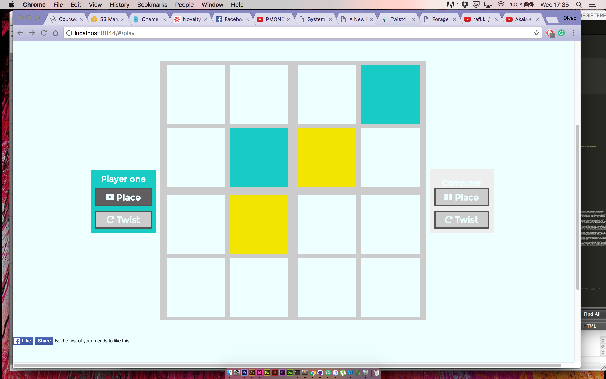
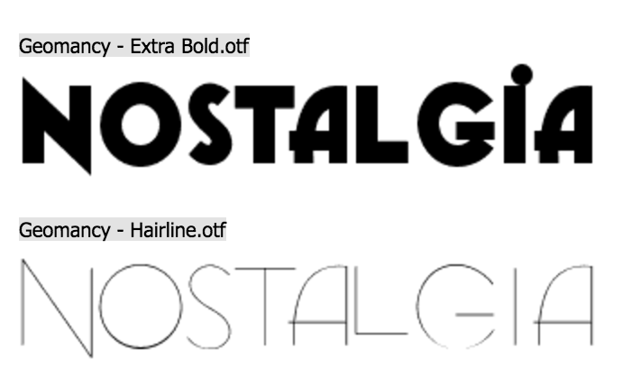
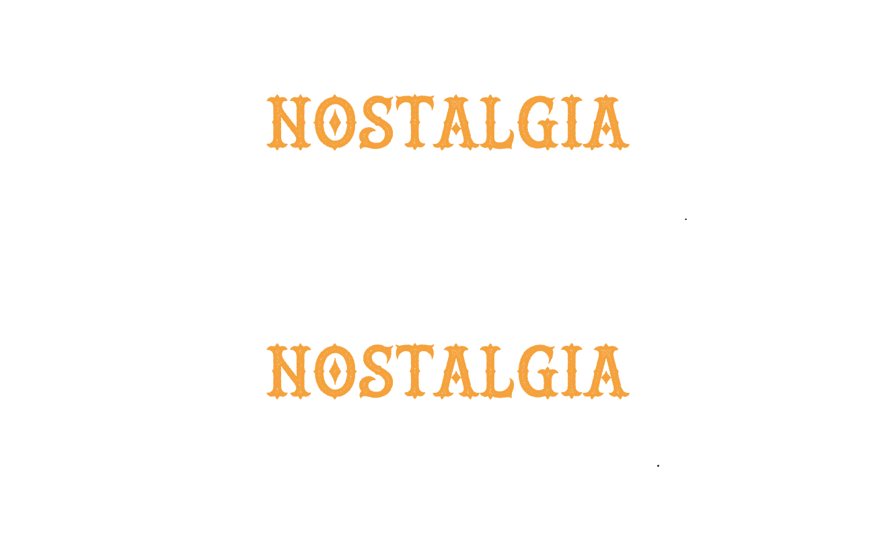
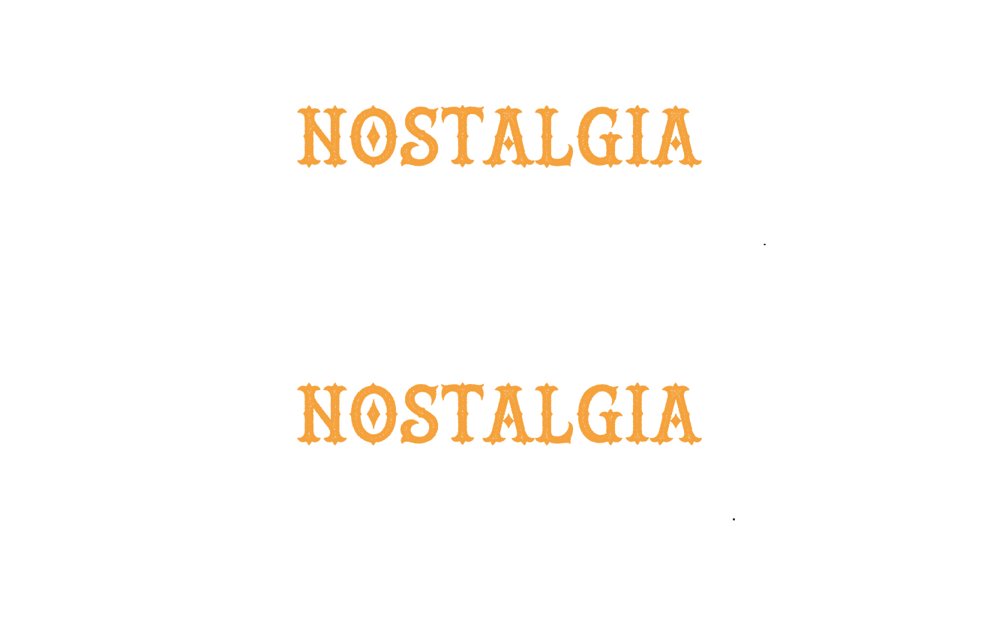
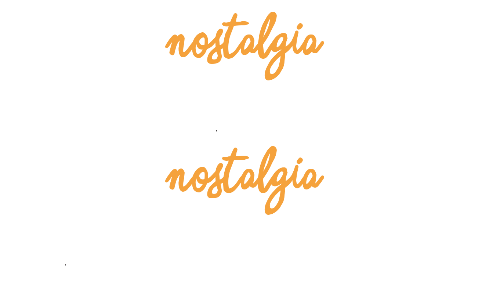
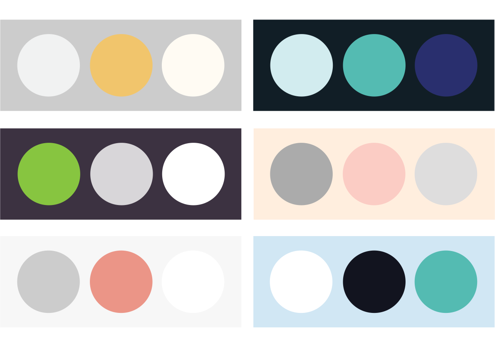
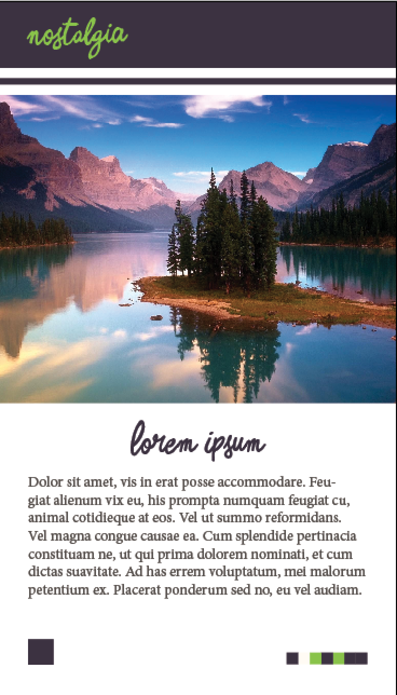

Concepts:
As there is quite an eclectic array of briefs to choose from, I felt initially it would be good for me to write a load of concepts about each brief to see which got my creativity excited.
Agile Aging
Twist4: Build a brain game built to keep the brain active, like chess, Sudoku, connect 4 type of game. Like Connect 4, but players rotate squares to match with their own or to sabotage opponent. This game could also have an AI setting so users can compete against the computer.
Beyond Borders
Black Poppy: The countless amounts of colonial black soldiers who thought in both world wars who seem to have been forgotten in the history books. The poppy that people wear in November to me feels like a symbol honouring the British soldiers who died. I purpose a black poppy for the black soldiers helped fight a war for their previous slave owners to fight a war against fascism.
Agile Aging
Reminisce: Dementia is a mental disease which slowly destroys the brain, one of the most well known side effects is the sufferer forgetting their family and friends which can be extremely distressing for loved ones. I am considering generating a game where a database holding information about a sufferers past, family and mental triggers. Using subconscious factors for example; their son could be a good character in a game, with the users favourite music from their time period integrated. The game could consist of something really basic like items falling from the sky, the user dodgers bad things like eggs but catch photos of their loved ones.
The Good Life
Live Live: This idea is to help combat obesity by offering healthy food alternatives. Imagine a pop up market where inside is a selection of chefs, cooking food live in front of your face. Each chef cooks a different meal; these could be restaurateurs, farmers or passionate chefs. You walk through the market experiencing free samples of all the food. If you like a recipe the chef tells you information and can even show you live some techniques how to cook the dish. If you decide you would like to cook this yourself at home. A pre-packaged chilled box with all the ingredients inside, an instruction manual with a step by step guide how to cook this dish. Every dish is cooked from fresh ingredients and it allows each chef to make profit for them selves. (Could be called live Live"people wouldnt know whether it says live or live.")
Agile Aging
Snapper: Users link this app too their Phone, Instagram or Facebook and when they take a photo but would prefer a hard copy instead of a digital image, the app send the photo(s) chosen as a polaroid to the users address. This could work with dementia users, for example a family member could visit them on the Friday, take loads of photos with them, then they could be delivered by Monday. Hopefully triggering a memory for dementia sufferer.
Agile Aging
Granny Phone: In a world where there are too many music genres to count and so much new music is created daily i thought of an idea to preserve old tunes. Granny Phone is Spotify, with bigger buttons, easier interface for old people with bad eyesight. All the music on the app is prior 1969. I have read research, which tells me there is a connection between music and memory, especially nostalgic music from somebodies past. Building an app for people who were teenagers & adults before 1969 don’t necessarily want to listen to music after this time period. This app is exclusively classics. Kind of like a radio station which only plays old music. This music app only holds old music, with an easy user interface for older people.
The Good Life
GrHabit:In the convenience of today's society a lot of people eat cheap food because they do not know how, or cant be bothered to cook. Cheap food is normally not very nutritious. I purpose a take away option, which only delivers healthy food, on menus showing people the calories, and at a competitive price to the kebab shops. The idea is to show people there are other options to a donner kebab.
Beyond Borders
Fragility: White fragility is when even a minimum amount of racial stress becomes intolerable, triggering a range of defensive moves. These moves include the outward display of emotions such as anger, fear, and guilt, and behaviours such as argumentation, silence, and leaving the stress-inducing situation. This usually happens when a white person is confronted about racism. As a member of society who is not white on a regular basis I have encountered mild and extreme, racism, some white people seem to try and forget that this is a problem and try to ignore that this is. I am suggesting to create a guide book for white people to explain in layman’s terms, the do's and don'ts when it comes to racial behaviour. Kind of like Urban Dictionary, this could be done in the form of an app for people to reference what is considered racist and what is not.
Twist4
Granny Phone
Black Poppy
Grabit
Live Live

Dementia
Currently there are 60,000,000 people worldwide suffering with Dementia.
This number is expected to triple in the next 10 years.
It takes from us what we value most; Our quality of life.
Neuroscientists believe it can be prevented through brain exercises, by stimulating and keeping the brain active.
Alzheimer's disease is the most common form of dementia.
Too prevent Alzheimer's, keep physically active & mentally stimulated.
These games need to be fun & invigorating to keep the brain healthy.
Most people know somebody who has suffered with Dementia.
Our knowledge of the human brain is like our knowledge of the ocean. There is much to know but we have only scratched the surface.
How can we protect ourselves from memory loss?
What is the difference between good scientific tools, and selling false hope?
People live in fear of losing their memory.
Music inspires the mind.
There is a lot of accumulating evidence stating that remaining physically active particularly in later life is beneficial for cognitive performance.
After going to the gym 98% of people feel they are sharper and more mentally tuned.
Being outside boosts brain activity significantly.
People want a magic pill which eliminates Alzheimer’s. But the real world doesn’t work like that. Research suggests you can prolong the disease though mental and physical exercise.
Filling your life with intellectual challenges can help keep your brain healthy longer and may delay the onset of Alzheimer’s by up to 10 years according to research from the Mayo Clinic. This research suggests intellectual challenges like your job, education, creativity, outside activities, a good social life, playing games and learning music.
Alzheimer’s is known as; The Long Goodbye - Because the person with the disease fades always slowly. Very long time to say goodbye before the point they don’t recognise you at all.
Brain foods - coconut oil, banana, berries, nuts, chia seeds, fish. No scientific evidence suggests this works.
Social interaction makes a significant positive improvement on mental health.
There is no easy answer for Alzheimer’s.

Twist4
The idea behind this game is to be like other cognitive games, training the brain through puzzles and games. This game is about twisting squares to connect four of the same colour to beat your opponent. I have used a mild, fresh, cool and relaxing colour palette to suit the older audience. This is a basic combination of Angular Js, Node, Javascript, CSS3 & HTML5. Bellow is a visual representation of the progression of the page design.

Bellow is an example of a game which users a lot more colour, sound effects and better transitions. I will take all of these into consideration before I style the game further.

Lumsoity

In astronomy, luminosity is the total amount of energy emitted by a star, galaxy, or other astronomical object per unit time. It is related to the brightness, which is the luminosity of an object in a given spectral region.
www.lumosity.com is an app which contains interactive games which they suggest helps with brain activity.
It is the most popular brain training game.
It costs $15 a month and has 70,000,000 users.
They suggest you play 3 times a week for 15 minutes at a time.
Tagline: Challenge your brain activity to protect it.
It is suggested to be cognitive workout.
To wake up your mind.
I watched a video researching into Lumosity titled; "Brain training exercises and games: Do they work? (CBC Marketplace)" - https://www.youtube.com/watch?v=_MG6J2z2dVE:
They took a series of tests to see how effective this particular brain training game is on preventing dementia.
The main test was; 50 people for a month trial the app and test it for the recommended amount of use. Before they used the app they were placed into an FMRI machine and their brain activity was measured while playing games on Lumsoity. After a month they would measure to see if their was an improvement in brain activity or if they were selling false hope.
The first FMRI scan showed that the visual cortex of the brain was activated in response to complex patterns. Basically saying the brain reacted to the visual interface. This suggests that Lumosity is fun. The second time round 30 days later; the brain activity was similar, which shows consistency in their brains. Parts of the brain solving problems are still doing the same thing a month later. On average the users brain activity deteriorated on 6/13 of the tests over the month. Some tests improved slightly, and some deteriorated slightly. This test shows that there are no statistical differences. Lumosity argues you need to play the test for longer then a month to see results. However the neuroscientists could not see and effect, not even a hint. These results state that even if you played the game for any amount of time the results will stay the same. On top of this there is no independent research saying Lumosity will benefit you.
If you went to the gym for a month, after a month you would feel physically stronger, if brain games worked you should also feel mentally stronger after a month. Tests suggest that games like this only make you better at playing video games. - There is no easy answer to Alzheimer’s.

Brain Damage
One of my early projects which is an experiment suggesting that sound waves and visual content has a effect of the brain while creating music.
http://i-remember.fr/
I-Remember is a webpage about Alzheimer’s. It is a database of memories set in a fictitious digital landscape where users submit their memories. The page starts with a phrase on screen:
"How lucky are we to be able to say I remember.
Lets share our memories to fight Alzheimer’s disease"
Then you are transported to a Galaxy like landscape which asks you to submit a memory.
The page relies on the submition of memories or the website fades away. I feel inspired by this webpage and it hints at two of my concepts for Agile Aging. Currently I do not know which brief I will choose and which concepts work. This is purely research and experiments.

Augmented Reality
Pokemon Go was a nostalgic throwback for the children of the 90's which was a fad in July 2016, the game allowed users to find and capture Pokemon though there phones by walking around. I didn't play the game because I didn’t find it particularly exciting however the technology and the fact that augmented reality was reaching the masses excited me. This was not the first time I had seen augmented reality so to me it wasn’t as fascinating as it seem to be for the rest of my generation. I worked for Samsung in 2010 and I launched the Galaxy S in South Suffolk & North Essex, one of the main apps launched with this phone was Layar:
Layar allows the world to become a Minority Report landscape with adverts and moving graphics popping out of everything, practically the developers at Google Glass’s wet dream. What made Pokemon Go interesting was how fast it became a success; On the day of release in Japan, more than 10 million people downloaded the game, including 1.3 million in the first three hours. By July 26, the intelligence system estimated the game to have been downloaded 75 million times worldwide. Through in-game purchases, the game generated more than US$75 million in revenue by July 26. From iOS users alone, the game generated approximately US$1.6 million in daily revenue. The average daily usage of the app on Android devices in July 2016 exceeded Snapchat, Tinder, Twitter, Instagram, and Facebook. Fascinated by these downloads, several app developers are focusing on developing similar augmented reality apps using available AR SDKs.

I looking into the effects augmented reality has on mental health, above is an article suggesting that it helps people with depression. Bellow is a link to an article which states that games like Pokemon Go also help people with autism.
http://www.vice.com/en_uk/read/from-hands-to-pokmon-go-how-mobile-phones-help-people-with-autism-newnormal-o2
Above are two articles about some projects in Australia building augmented reality apps to help dementia sufferers.
Alzheimer's Research UK creates virtual reality app to simulate dementia. 850,00 people live with Demntia in the Uk today. To defeat it we first need to understand it. Alzheimer's Research UK has created a unique virtual reality experience to give an insite in the mind and life of a sufferer.

Death Note
Death Note is a Japanese manga series written by Tsugumi Ohba and illustrated by Takeshi Obata. The story follows Light Yagami, a high school student who discovers a supernatural notebook from a Shinigami named Ryuk that grants its user the ability to kill anyone whose name and face he knows. The series centers around Light's attempts to create and rule a world "cleansed of evil" as "God" using the notebook, and the efforts of a detective known as L to stop him.
In Death Note there is such a thing called the Shinogammi Death Eyes, using this power allows you to see how long somebody else has to live, you cannot see your own but you can see other peoples. This gave me an idea to give each memory a time limit for example 12 months, each user can see how long everybody’s memories will last for other then their own. If a user likes somebodies memory they can endorse their memory and the more endorsement they have the longer the memories will stay in the digital universe. This stops the database from getting too full and will filter out bad memories. In areas like the Eiffel Tower or landmarks many people will save memories, but I can imagine not many people will endorse them so they will disappear. Where as random memories which have a beautiful meaning will get high endorsement. Each endorsement is an additional month.
Alzheimer’s most tragic symptom is that sufferer's memories deteriorate, this feature in the app is a homage to this.

Untiled Concept
Using augmented reality I intend to create an app which, saves your memories in locations. For example you can go to a location (beach, woods, city) anywhere you would like to take a photograph and save the memory there. You can be by yourself, a couple, friends, ect. Once uploading your photography you can describe your moment in a description and the option of linking a song from youtube/ soundloud/ spotify. At this location other people can find your memories. To access memories some will have the option to add riddles, codes and games to make them harder to find or open, allowing a special connection with certain users. So while looking through your camera at a location you will see glowing orbs which symbolize other memories, they look like the dreams in the BFG, they fly around and you can open them. The user has the option to choose the colour of their memory. Augmented reality allows your memories to be physical and digital all at the same time. This allows your memories to be cemented into digital reality making it harder for you to forget. We all have special places with special people, this app allows us to permanently leave these places special, leaving a mark. Its like when you carve your name into a tree with a lover.
Target Audience
"App Name" is for people who use social media who interested in photography & new technologies wanting to preserve memories in a new, innovative & dynamic way. I feel the people who would use this would be on average aged 25-35.
the app in a short paragraph
"App Name" is an augmented reality social media app which allows users to store memories at locations through the medium of photography and descriptive text. Preserving special memories, with special people, in special places.

Concept Development
An app which saves memories in a digital database which can be seen physically though augmented reality by yourself and other users.
Like a physical digital social media site where users upload a photographs and a discriptions to a data base which allows other users to find them.
A map will display where the memories are worldwide, users can only see the memories throught the augmented realtiy if you are within a reasonable distance from its saved location. However a map will show glowing spots of where all the memories are.
You can use your camera on your phone via the app to see where peoples memories are physically, these will be displayed as colourful orbs which fly around.
How dose this help combat Dementia?
There is a lot of accumulating evidence stating that remaining physically active particularly in later life is beneficial for cognitive performance. This app gets people out and about.
Neuroscientists believe it can be prevented through brain exercises, by stimulating and keeping the brain active.
Too prevent Alzheimer's, keep physically active & mentally stimulated.
These games need to be fun & invigorating to keep the brain healthy.
Being outside boosts brain activity significantly.
Filling your life with intellectual challenges can help keep your brain healthy longer and may delay the onset of Alzheimer’s by up to 10 years according to research from the Mayo Clinic. This research suggests intellectual challenges like your job, education, creativity, outside activities, a good social life, playing games and learning music.
Social interaction makes a significant positive improvement on mental health.

How is it Profitable?
The business model called shareware has been in use for software (crippleware or freeware) since the 1980s, particularly in the form of lite version to promote a paid-for full version.
Freemium was a business model first recognized in 2006: Give your service away for free, acquire a lot of customers very efficiently through word of mouth or marketing, then offer premium priced value added services or an enhanced version of your service to your customer base. On average 10% of users actually pay for the services.
Bellow is a video of Southpark explaining what Freemium gaming is in the episode; Freemium isn't Free.
The episode begins by the character Jimmy suggesting people to download the new Terrence & Phillip game (fictional cartoon series the characters watch in South Park) Throughout the episode the metaphor I perceive is that of a crack cocaine dealer: The game gives you a free hit and then once you are addicted you end up spending money on it. Most characters think the game is boring however Stan gets addicted and ends up spending thousands. The American Devil comes to save Stan and defeat the more evil Canadian Devil who is pushing the game.
What can this app sell?
I am going to base the orbs around the colours of the stars for example, your standard memory is yellow, if endorsed it turns blue, if it gets plenty of endorsement it goes white. When its dying it turns red. I will offer exclusive colour options like; green, pink, purple, turquoise ect for a fee.
I am going to allow people to buy additional time on their own memories. For example the app will send them a message if their memory is about to fade, they can pay a fee to keep it for a few more months.
Payment to put passwords on memories.
Payment to put puzzles or riddles on your memory.
I will offer permanent memories for £19.99 a month
Payment if you would like to add music to your memory.

Name ideas
Brainscape
- Refrencing to Landscape & Escape.
Memory Bank
- A bank of memories.
Neuroscape
- Neuroscience is the scientific study of the nervous system including the brain.
Neuro
- Neuroscience is the scientific study of the nervous system including the brain.
Hummingbird
- Hummingbirds have the highest metabolism of any homeothermic animal.
Goldfish
- Common knowledge is that fish cant hold their memory for longer then 3 seconds.
Elephant
- Common knowledge is that Elephants hold their memory for long periods of time.
Elephas
- Comes from the Latin word for Asian elephants; Elephas maximus.
Escape
- Offering a reality of escapism, could also be percieved as disappearance.
Orbs
- Glowing balls of light.
Epsilon Aurigae
- Every 27 years, a bright star called Epsilon Aurigae fades over period of two years, then brightens. Although amateur and professional astronomers have observed the system extensively, the nature of both the bright star and the companion object that periodically eclipses it have remained unclear.
Algol Perseus
- In the constellation of Perseus named by the ancient Greek warrior who beheaded Medusa. Algol marks the evil eye of Medusa’s
severed head. Every 3 days the star dims as if the eye is winking at us.
Recollection
- The action or faculty of remembering or recollecting something. A thing recollected; a memory. The name also suggests a collection.
Reminisce
- Indulge in enjoyable recollection of past events.
Nostalgia
-
A sentimental longing or wistful affection for a period in the past.

The Strongest Brand Name
Recollect - The action or faculty of remembering or recollecting something. A thing recollected is a memory. The name also suggests to collect.
Target Audience
Recollect is for people who use social media who interested in photography & new technologies wanting to preserve memories in a new, innovative & dynamic way. I feel the people who would use this would be on average aged 25-35.
the app in a short paragraph
Recollect is an augmented reality social media app which allows users to store memories at locations through the medium of photography and descriptive text. Preserving special memories, with special people, in special places.

Type & Longhand Logo
Social Media Logos


Handwritten

Serif
Sans Serif
Retro

I am at the stage of branding the app. Above is 21 different type faces I tried with the brand name. I learned from testing these that as recollect or reminisce is looking back into the past, therefor a serif, handwritten or retro style font will allow the branding to have a nostalgic feel. To give a modern feel to the branding to pay respect to the modern technology, for the body text or "p" tags I will need to use a basic sans serif possibly arial. I feel the two bellow are the best fonts for this:
Reconsidering the name i then decided to try Nostalgia & Reminisce in the same Fonts. These are both better words, in sound, letters and meaning. In doing this I also decided to eliminate the font; Crunchy.

Reminisce
- Indulge in enjoyable recollection of past events.
Nostalgia
- A sentimental longing or wistful affection for a period in the past.
After careful consideration I feel Nostalgia is the perfect name of the brand. The dictionary defines Nostalgia as: A sentimental longing or wistful affection for a period in the past. I feel this font works because it looks mystical, oldly worldly, and is relatively more serious then the other font.
The Strongest Brand Name:
Nostalgia - A sentimental longing or wistful affection for a period in the past.
Target Audience:
Nostalgia is for people who use social media who interested in photography & new technologies wanting to preserve memories in a new, innovative & dynamic way. I feel the people who would use this would be on average aged 25-35.
Description In A Short Paragraph
Nostalgia is an augmented reality social media app which allows users to store memories at locations through the medium of photography and descriptive text. Preserving special memories, with special people, in special places.
Body Text

Body Fonts sampled: Arial, Helvetica, Times New Roman, Minion Pro, Calibri, Minion Pro, Cambria, Century Gothic. I was surprised to see how well the serif fonts worked with the already elaborate font. From this test I would say Minion Pro works the best. However this could look completely different in the app.
Readdressing Longhand
I felt I needed to readdress the longhand because the font worked with "Recollect" there was no reason it meant that it works with the word "Nostalgia."


Two Best
 


Potential Colour Pallets
I am testing colour pallets on a dummy app layout too see how the fonts look, what colours I could consider in the future. In this test, i found the hand written font looked a lot better.


Test Results
The results from my tests certified the handwritten font was of my preference, this might look quite similar to Instagram's logo. I do not feel this is a bad thing, because Instagram is probably the closest working app to my concept. I like these two colour pallets the most, preferably the purple pallet because it is more majestic and whimsical especially with elements of gold.
Reconsidering Type?
I tried these pallets using the original typeface I used. I do not know how i feel about this. This just suggests I should go back to the drawing board and look at more fonts and perhaps create a shorthand. I less more?

Moneta
In Roman mythology, Moneta (Latin Monēta) was a title given to two separate goddesses: the goddess of memory (identified with the Greek goddess Mnemosyne) and an epithet of Juno, called Juno Moneta (Latin Iūno Monēta). The latter's name is source of numerous words in English and the Romance languages, including the words "money" and "mint".
Moneta depicted with treasure chests on the front of an 1861 Confederate States of America $50 banknote.
The cult of the goddess Moneta was established largely under the influence of Greek religion that featured the cult of Mnemosyne ("Μνημοσύνη"), the goddess of memory and the mother of the Muses. The goddess's name is derived from Latin monēre (which means to remind, warn, or instruct). She is mentioned in a fragment of Livius Andronicus' Latin Odyssey: Nam diva Monetas filia docuit ("since the divine daughter of Moneta has taught...", frg. 21 Büchner), which may be the equivalent of either Od. 8,480-1 or 488.
The epithet Moneta given to Juno more likely derives from the Greek word "moneres" ("μονήρης") and means "alone, unique". By Andronicus' age, the folk-etymology deduction from monēre prevailed, and so he could transform this epithet into a separate goddess, the literary (but not religious) counterpart of Greek Mnemosyne.

Moneta's Box
Inspired by Pandora's Box: a process that once begun generates many complicated problems. Pandora was a Greek Goddess: The "box" was actually a large jar given to Pandora which contained all the evils of the world. Pandora opened the jar and all the evils flew out, leaving only "Hope" inside once she had closed it again.
Today the phrase "to open Pandora's box" means to perform an action that may seem small or innocent, but that turns out to have severely detrimental and far-reaching negative consequences. The action cannot be reversed.

Juno
In Roman mythology, Moneta (Latin Monēta) was a title given to two separate goddesses: the goddess of memory (identified with the Greek goddess Mnemosyne) and an epithet of Juno, called Juno Moneta (Latin Iūno Monēta). The latter's name is source of numerous words in English and the Romance languages, including the words "money" and "mint".
Initially hesitant to call the app Juno because of a film I dislike with the same title, I reluctantly excepted that it is short, sweet, catchy, playful and has meaning behind it. This is a lot cleaner then Moneta's Box.

Site Map & Interface
#08003E, #F0C471 & #FFFFFF.
Bellow is a selection of existing app interfaces and augmented reality layouts from fiction.